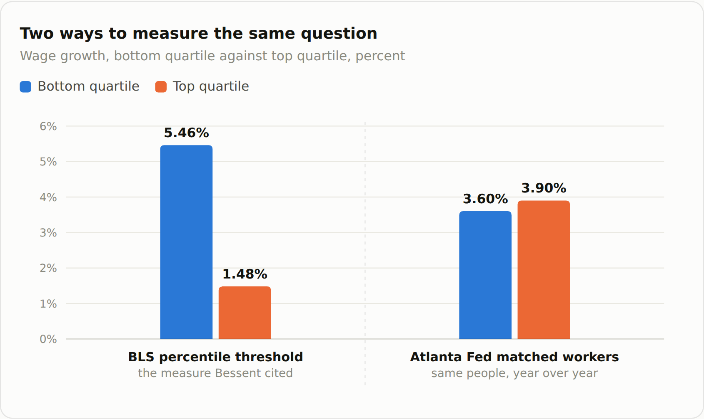
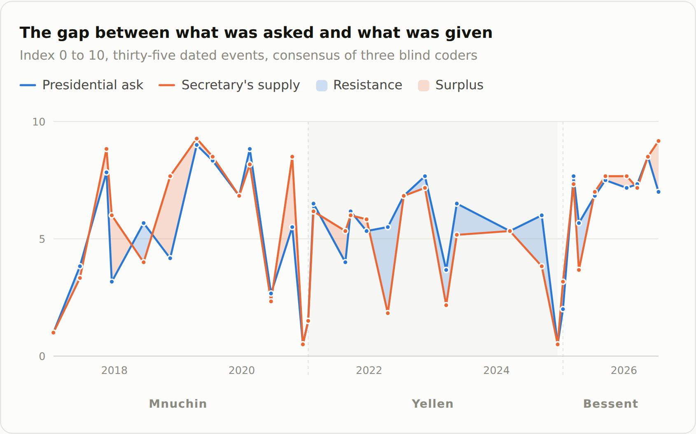
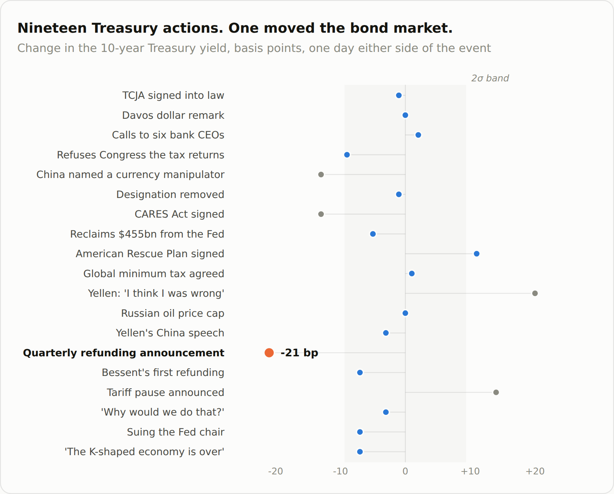

Second in an occasional series in which the author takes powerful people at their word, and then checks the word. A few days ago it was Mark Zuckerberg's manifesto. This week it is the Treasury Secretary's economy. The author is an amiable and cheerful sort, with an uncomfortable allergy to BS.
Bessent says the K-shaped economy is over. On August 4 he told CNBC: "I can say here definitively, the K-shaped economy is over." His evidence is 5.5% year-over-year wage growth for the bottom quartile of earners, roughly three times the top quartile's.
A panel of experts assembled by PBS NewsHour says otherwise. Most of the nine voices it convened disagreed, in different directions:
- Peter Orszag, Lazard chief executive, former CBO and OMB director: declaring the K's death is "a little bit premature."
- Mark Gertler, NYU, co-author of the standard model of credit-driven recessions: not a C but a "tilted K," the upper arm still rising.
- Aaron Klein, Brookings: stock prices "make the rich feel even richer" while working Americans struggle to pay for gas and energy.
- Heather Long, chief economist, Navy Federal Credit Union: wage growth is "totally wiped out by inflation."
- Deon Strickland, Wake Forest: "the probability is higher for the continuation of a K than the ascent of a C."
Research from PNC, the National Retail Federation and Bank of America all finds the gap narrowing, and all three say the K-shape persists.
His number is real, and it is the wrong instrument. It comes from Treasury's own analysis published the day before the interview, and from a BLS table that measures a line drawn through the wage distribution rather than the wages of actual people. The Atlanta Fed's series, which follows the same workers year over year, shows the bottom quartile growing slowest of all four quartiles in every month of 2026.
Rather than simply report the disagreement, we modeled the office. We reconstructed the operating doctrines of the last three Treasury secretaries from the public record. Bessent, Janet Yellen and Steven Mnuchin hold three incompatible theories of what the office's word is worth: a stock to preserve, a cost to minimize, an instrument to deploy.
Isolating on the 10-year Treasury, the K is still alive. Bessent named the 10-year as his own metric in February 2025. He controls exactly one channel to it, and it is the same channel he had accused Yellen of abusing. He kept her policy and expanded it. Yields rose anyway. Of nineteen dated Treasury events tested against daily yields, only one moved the bond market.
What that means. A wage-percentile table cannot see asset income. In a year when the S&P is up 20% and the top 10% of households hold 86.5% of corporate equities, the arm of the K that is still rising is the one his statistic is structurally unable to look at.
On August 4, Treasury Secretary Scott Bessent told CNBC's Squawk Box that he had heard enough.
"I got sick of hearing about this K-shaped economy," he said. "I can say here definitively, the K-shaped economy is over."
A week later PBS NewsHour ran a piece assembling nine outside voices to assess the claim. Most of them disagreed. Peter Orszag, the Lazard chief executive who ran the Congressional Budget Office and OMB, called declaring the K's death "a little bit premature." Mark Gertler, the NYU economist whose work on credit and recessions Ben Bernanke used to run the Fed through 2008, offered a friendly amendment: not a C, but a "tilted K," with the upper arm still pointing up.
The disagreement is the least interesting thing about the exchange. Economists disagree. What is interesting is the number Bessent reached for, where it came from, and what his willingness to describe it as definitive reveals about how he understands the office he holds. That understanding is not merely different from his two immediate predecessors'. It is the direct opposite of one of them.
The number is real. It is also the wrong instrument.
Bessent's evidence is specific and, on its face, strong: the bottom quartile of wage earners saw 5.5% year-over-year gains, roughly three times the top quartile's.
That figure is not invented, and it is not spin from a friendly think tank. It comes from Treasury's own "Economy Statement for the TBAC," published August 3, the day before the interview, which reports that "the 25th percentile of nominal usual weekly earnings rose 5.5% in 2Q." It traces to Table 5 of the Bureau of Labor Statistics' Usual Weekly Earnings release. Run the arithmetic and it holds: the 25th percentile went from $806 to $850, up 5.46%, while the 75th percentile went from $1,887 to $1,915, up 1.48%. If anything, "three times" understates it.
The problem is what Table 5 measures. It is a cross-sectional percentile threshold, a line drawn through the wage distribution at a moment in time, not the wage growth of any group of people. It moves when the composition of who holds a job changes. If low-wage positions disappear, the 25th-percentile line rises mechanically, because the workers below it have stopped being counted. In a softening low-wage labor market, that is precisely the artifact you would expect.
The instrument built to answer Bessent's actual question is the Atlanta Fed's Wage Growth Tracker, which follows the same individuals twelve months apart. It says the opposite.

Left: BLS Usual Weekly Earnings Table 5, Q2 2026, the measure Bessent cited. Right: Atlanta Fed Wage Growth Tracker, June 2026, twelve-month moving average, which follows the same workers over time. The ordering reverses.
By wage quartile, on a twelve-month moving average, the bottom quartile has grown at 3.5% to 3.6% all year while the top quartile has grown at 3.8% to 3.9%. The bottom quartile has been the slowest-growing of all four quartiles in every month of 2026 and has not overtaken the top at any point.
There is more. It is a single noisy, not-seasonally-adjusted quarter, and the same Treasury series read 2.9% in the first quarter. Bessent's companion claim of roughly 2% real gains also mismatches its periods, applying July's 3.4% CPI to second-quarter earnings data. Second-quarter CPI averaged 3.83%, which makes the real gain 1.6%.
One thing does cut his way, and it deserves stating because almost nobody has. In dollar terms the 25th percentile gained $44 a week against the 75th percentile's $28, so the absolute gap narrowed by $16. The second quarter really was a compression quarter on that table. But the gap was $1,060 a week two years ago and is $1,065 now. Nothing has closed.
Why this isn't a gaffe
The temptation is to file this as a politician overselling a statistic. That reading misses what is distinctive about Bessent, and the tell is in his résumé.
Before Treasury, Bessent spent four decades in global macro, including running Soros Fund Management's London office and later serving as its chief investment officer. He was part of the team that shorted sterling in 1992. George Soros's central theoretical claim, the one he considers his real contribution above any individual trade, is reflexivity: in markets, participants' perceptions do not merely observe the fundamentals, they alter them. The sterling position did not just predict a devaluation. It helped produce one.
For someone formed that way, a public statement is not a description of a state of affairs. It is an intervention in one.
Consumer confidence is an input to consumer spending; assert that the gap is closing and you may help close it. Read as description, "definitively" is indefensible. Read as intervention, it is a professional move.
That does not make the claim true. It explains why a person with that training would not experience making it as dishonest, and it explains the sequence. Treasury's own analytical shop produced the framing on a Monday. The Secretary deployed it on television on Tuesday morning. That is not a leak or a coincidence. It is an institution being used as designed.
Janet Yellen's opposite answer
To see how unusual this is, put it beside the same office four years earlier.
On May 31, 2022, with inflation running near its peak and the American Rescue Plan under sustained attack, Treasury Secretary Janet Yellen sat down with Wolf Blitzer on CNN and said:
"I think I was wrong then about the path that inflation would take."
It is difficult to overstate how few political incentives pointed toward that sentence. She was the administration's chief economic voice, on its worst issue, conceding a forecasting error that opponents had spent a year alleging. It made her the most quotable liability the White House had.
She said it because her theory of the office required it. Yellen is a labor economist by training; her academic work with George Akerlof on efficiency wages argued that labor markets do not clear and that unemployment leaves permanent scars. The policy corollary, that doing too little costs more than doing too much, is what justified going big on the Rescue Plan in the first place. Her framework produced the error. Her framework also held that Treasury's ability to be believed in a crisis is a stock that depreciates when spent on convenient claims, so an error gets paid down promptly.
Note what that means. The demand from the White House and the conviction of the Secretary agreed completely on the ARP, and were wrong together. There was no friction anywhere in the structure to surface the mistake, because the President's request and the Secretary's deepest professional belief were the same request. Yellen's most expensive failure came from perfect alignment, not from mismatch. Her doctrine then compelled the confession that made it politically worse.
Steven Mnuchin's third answer
Between them sits a third position, and it is neither.
Steven Mnuchin came to Treasury from seventeen years at Goldman Sachs, from buying the failed thrift IndyMac under an FDIC loss-sharing agreement, and from running Donald Trump's 2016 campaign finance operation. In November 2016 he told CNBC there would be "no absolute tax cut for the upper class."
The Tax Policy Center's analysis of the bill he shepherded found the top 1% took 20.5% of the 2018 cut, averaging $51,000 against $60 for the bottom quintile. He promised a full Treasury study showing the tax cut would pay for itself and delivered, in December 2017, a single page.
The uncharitable reading is that he was lying. The more useful one is that he was closing. In a negotiation, representations are instrumental and the counterparty does its own diligence. For Mnuchin, institutional credibility was neither a stock to protect nor an instrument to deploy. It was a transaction cost, something you spend down to get the deal done.
That method produced the worst of his tenure and also the best. When the pandemic hit, the same reflex that yielded the one-page analysis produced the CARES Act's Title IV architecture: $454 billion of Treasury equity sitting in a first-loss position inside special purpose vehicles, which is what legally permitted the Federal Reserve to lend at roughly ten-to-one against it. Only about $195 billion was ever committed. The announcement did the work.
Three secretaries in under a decade, and three incompatible answers to what the office's word is worth. A stock to accumulate. A cost to minimize. A position to express.
Each is the direct output of the person's professional formation, and the third one spends what the first one built.
What the space between them was telling us
Three doctrines invite an obvious question, and it is a measurable one. If these secretaries differ in how much of the office they will spend, does that difference show up anywhere a market can see it?
We tried to find out. For thirty-five dated events across all three tenures we scored two things: how much institutional credibility the president was asking the secretary to spend, and how much the secretary actually spent. Plotted together, the two lines converge and diverge. The space between them is the interesting part, because it is where an office either resists its principal or volunteers more than was asked.

Blue above orange means the secretary supplied less than was asked. Orange above blue means more. Scored blind by three independent coders from a written rubric; they agreed with one another at an intraclass correlation of 0.95. Ceremonial events such as confirmations and departures score near zero by design.
The shape is real, and it survived independent testing. On the coders' consensus, Mnuchin ran a net surplus, supplying more than was asked of him, which is almost entirely the pandemic. Yellen ran a net deficit, resisting on balance across four years. The extremes were not close calls on any coder's sheet: the CARES architecture, the refusal to hand Congress Trump's tax returns, and the K-shape declaration sat at the top of every one.
Then we asked whether that space predicts anything in the bond market. It does not.
Correlations between the gap and the 10-year yield run from minus 0.33 to plus 0.14, at every horizon out to twelve months. That is noise, and it should be reported as noise. So we asked the question properly instead, with an event study: nineteen dated Treasury actions, windows of five trading days either side, measured against daily yields and a baseline of four hundred trading days.

The shaded band is two standard deviations of an ordinary three-day move, computed from 404 trading days. Events inside it are indistinguishable from the market's daily churn. Three fall outside; two of those are explained in the note below.
Two of the three outliers do not survive scrutiny. Yellen's May 2022 interview sits in the middle of a trending market that continued rising for a week afterward, and a three-day window laid over a trend produces exactly this artifact. The April 2025 move is the presidential tariff pause, not an act of the Secretary. That leaves one.
One event survived. Not the statutory refusal, which moved the 10-year nine basis points. Not the November 2020 decision to reclaim $455 billion from the Federal Reserve over its public objection, which moved it five. Not the defense of strategic uncertainty, not the Senate remark about suing the Fed chair, not the declaration that the K-shaped economy was over, all of which sit inside the ordinary daily churn of the market.
The one that moved it was a quarterly refunding announcement. On November 1, 2023, Treasury told the market how much long-dated debt it intended to sell, and the 10-year fell twenty-one basis points in three days and forty-six over two weeks.
Everything a Treasury secretary does politically is invisible to the bond market. The fights, the refusals, the declarations, the defiance of a congressional subpoena: none of it registers. What registers is the plumbing.
The one number he can't move
Which brings us to the trap Bessent has walked into, and it is a specific one.
On February 5, 2025, in his first days in office, he told CNBC: "The president wants lower rates… He and I are focused on the 10-year Treasury and what is the yield of that." He simultaneously said the administration would not press the Fed to cut, explicitly claiming the long end as Treasury's own domain.
The 10-year is the average expected path of overnight rates over a decade plus a term premium. Treasury sets neither. The Congressional Budget Office's current estimate is that a one-point rise in debt-to-GDP moves long rates by two basis points, so the debt ratio has to move ten points to buy twenty. J.P. Morgan's decomposition of the 104-basis-point rise from September 2024 to January 2025 attributed 48 points to growth expectations, 40 to macroeconomic uncertainty and 15 to monetary policy.
There is exactly one channel a Treasury secretary genuinely controls: the maturity of what he issues. Skew toward short-dated bills and you withhold duration from the market, compressing the term premium. In July 2024, Stephen Miran and Nouriel Roubini named this "Activist Treasury Issuance" and estimated Yellen's bill-heavy mix was suppressing the 10-year by about 25 basis points. Bessent was among its loudest critics. At a Bloomberg roundtable in June 2024 he said Yellen had "taken control of monetary policy," producing "this incredible loosening."
Then he took office and kept it. His first quarterly refunding matched her auction sizes exactly and retained her forward guidance verbatim. Asked in June 2025 why he wasn't selling more long-dated debt, he said: "Why would we do that? The time to have done that would have been in 2021, 2022." That is Activist Treasury Issuance by definition, conditioning issuance on the level of yields. The August 2026 refunding was unchanged again. Bills now run about 21.7% of privately held marketable debt against the Treasury Borrowing Advisory Committee's recommended 20%, and Bank of America projects roughly 25% by fiscal 2027, the highest since 2004.
Miran now sits on the Federal Reserve Board while Treasury runs the policy he named. And it hasn't worked. The 10-year is higher today than when Bessent took office, and the 30-year, above 5.2%, is at its highest since 2007.
Watch, then, what he claims and when. In February 2025 he claimed the metric. By November 2025 he was saying the 10-year term premium was "basically unchanged while US borrowing costs across all other areas of the curve… are down year to date," a careful sentence that points at everything except the number he named. By May 2026, with yields climbing, it was: "Nothing seems more transient than this. This conflict will end one day."
Claim the metric. Reframe to its neighbors. Attribute the metric to forces beyond your control.
There is no evidence Bessent has ever claimed credit for the level of the 10-year, only for the policy inputs, which is the tell. He is spending the instrument he does control, the narrative, on an argument about distribution, while the metric he named moves against him. And a wage-percentile table, whatever it shows about the bottom quartile in one quarter, structurally cannot see asset income, in a year when the S&P is up 20% and the top 10% of households hold 86.5% of corporate equities.
That is where the K actually lives. It is the one place the number he chose cannot look.
—
Method and sources. Direct quotations are drawn from the CNBC Squawk Box transcript of August 4, 2026; Treasury's "Economy Statement for the TBAC," August 3, 2026; Yellen's CNN interview with Wolf Blitzer, May 31, 2022; Mnuchin on CNBC, November 30, 2016; and Bessent on CNBC, February 5, 2025, at a Bloomberg roundtable, June 7, 2024, on Bloomberg TV, June 30, 2025, at the Treasury Market Conference, November 12, 2025, and May 20, 2026.
Data: BLS Usual Weekly Earnings Table 5; Atlanta Fed Wage Growth Tracker; BLS CPI; Federal Reserve Distributional Financial Accounts; FRED series GS10 and the Treasury.gov daily par yield curve; Tax Policy Center; CBO Working Paper 2024-05; Miran and Roubini, "ATI: Activist Treasury Issuance and the Tug-of-War Over Monetary Policy," Hudson Bay Capital Research, July 2024; Treasury quarterly refunding statements and TBAC presentations.
On the index, and what did not survive testing
The scoring instrument behind the second chart was built first and tested afterward, which is the wrong order. Three coders then scored all thirty-five events blind from a written rubric, without access to the original scoring. They agreed with one another at an intraclass correlation of 0.95 on the ask and 0.94 on supply. Adding the original scoring collapsed that agreement to 0.69 and 0.76: the author was the outlier, scoring systematically high, with the largest errors on ceremonial events that were being scored at the ambient level of the relationship rather than as discrete acts. The chart above uses the coders' consensus.
One early finding did not survive and is absent from this piece: that Bessent was several times more converged with his president than Yellen was with hers. On consensus scoring the ratio is about 1.2, not 5.
A caveat that matters. The three coders were three runs of a language model, not three humans. An agreement statistic among them measures how tightly the rubric is specified under shared priors. It is not a substitute for human inter-rater reliability, and no human check was performed.
A shorter version of this piece, without the charts, appears in The Information.